1 Introduction
The way we look at the world greatly influences how we interact with it, so it should go without saying its worthwhile to look for the best ways understanding of it. I’d like to map out the world in the best way possible so I can get the maximum amount of satisfaction from being in this world.
2 Philosophy
3 Sciences
A system that organizes knowledge in the form of testable explanations.
3.1 Formal Sciences (Basically Math, Computer Science)
The study of formal systems; used to infer theorems from axioms according to a set of rules. It includes mathematics, systems theory, and theoretical computer science. This form of science relies on deductive reasoning rather than empirical evidence, which leads to disagreements as to whether or not this is considered a true form of science. Formal sciences do however play an important role in other forms of science; mathematical physics, computational physics, mathematical chemistry, computational chemistry, mathematical biology, computational biology, mathematical finance, computational finance, mathematical economics, computational economics.
3.1.1 Mathematics
3.2 Natural Sciences
The description, prediction and understanding of natural phenomenon based on empirical evidence from observation and experimentation. Is subdivided into physical and life sciences.
3.2.1 Physical Sciences
Can be subdivided into physics, chemistry, astronomy and earth sciences.
3.2.2 Life Sciences
Involves the study of microorganisms, plants, and animals including human beings.
3.3 Social Sciences
Concerned with the relationship among individuals in a society. This branch of science itself has many branches; anthropology, archaeology, communication studies, economics, history, human geography, jurisprudence, linguistics, political science, psychology, public health, and sociology. Various philosophical theories are used as models to better understand individuals and society. Various methods are used to study social phenomenon; positivism, antipositivism, qualitative, quantitative, etc, and they are used eclectically (meaning use a bucket of models to approach a problem).
3.3.1 Methods
3.3.1.1 Positivism
A philosophical theory that posits that "positive" knowledge is based on natural phenomenon and their properties and relations. Information obtained from sensory experience, interpreted through reasons and logic, forms the exclusive source of all certain knowledge. Positivism holds that society, like the physical world operates based on a set of laws. Introspective, intuitive knowledge, metaphysics and theology are all rejected because metaphysical and theological claims cannot be verified by sense experience.
3.3.1.2 Antipositivism and Critical Theory
3.3.1.3 Comte’s Positivism
3.3.1.4 Proletarian Positivism
3.3.1.5 Durkheim’s Positivism
3.3.1.6 Contemporary Positivism
4 Mathematics
5 Physics
5.1 Classical Mechanics
5.1.1 Position
5.1.2 Mass
5.1.3 Momentum
5.1.4 Energy
5.2 Quantum Mechanics
5.2.1 Position
5.2.2 Mass
5.2.3 Momentum
5.2.4 Energy
5.3 Special and General Relativity
5.3.1 Position
5.3.2 Mass
5.3.3 Momentum
5.3.4 Energy
6 Chemistry
7 Biology
8 Psychology
8.1 The Big 5
8.1.1 Openness
8.1.2 Conscientiousness
8.1.3 Extroversion
8.1.4 Agreeableness
8.1.5 Neuroticism
8.2 Theory of Multiple Intelligence’s
Differentiates human intelligence into specific "modalities" instead of looking at it in terms of general intelligence.
8.2.1 Musical-Rhythmic and Harmonic
Sensitivity to sounds, rhythms, tones, melodies and timber. People with high musical intelligence will tend have good pitch, can sing, play instruments and/or compose music. Mathematical and musical intelligence’s have some overlap when it comes to their thinking processes.
8.2.2 Visual-Spatial
8.2.3 Verbal-Linguistic
8.2.4 Logical-Mathematical
Ability to calculate, quantify, consider propositions and hypothesis, and carry out complete mathematical operations. It enables you to perceive connections and relationships using concepts and abstract symbolic thought.
8.2.5 Bodily-Kinesthetic
8.2.6 Interpersonal
8.2.7 Intrapersonal
8.2.8 Naturalistic
Human ability to discriminate among living things such as plants and animals, and other aspects of the natural world such as crystals, mountains, clouds, etc. Was of more notable value back when most people had to be hunters, gatherers, and/or farmers.
8.2.9 Existential
8.3 Cognitive Science
9 Machine Learning/Data Science/Artificial Intelligence
9.1 Machine Learning
9.1.1 Model Representation and Cost Function
9.1.1.1 Model Representation: Linear Regression
Example) Predicting Housing Prices
This linear regression example is a supervised learning problem because we are given the correct answer for this problem and we use it to train a function h that predicts the correct house price as a function of the size in \( ft^{2} \). This is also categorized as a regression problem because were trying to pick what the function considers most accurate output from a continuous set of possible answers, rather than choosing what the function considers the most accurate output from discrete set of possible answers, which we could categorize as a classification problem.
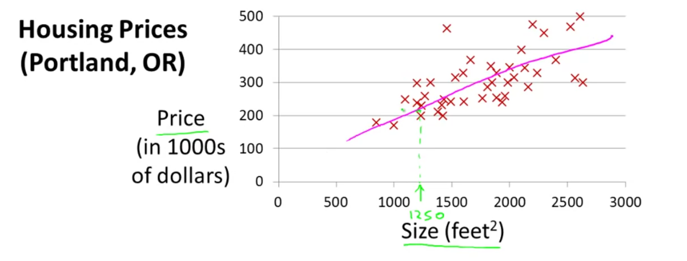
Figure: Linear Regression Housing Prices
Andrew Ng’s notation; \( \vec{m} \equiv \) number of training examples, \( \vec{x} \equiv \) "input" variable/features, \( \vec{y} \equiv \) "output" variable/target, \( (x, y) \equiv \) one training example, and \( (x^{(i)}, y^{(i)}) \) is the \( i^{th} \) training example.
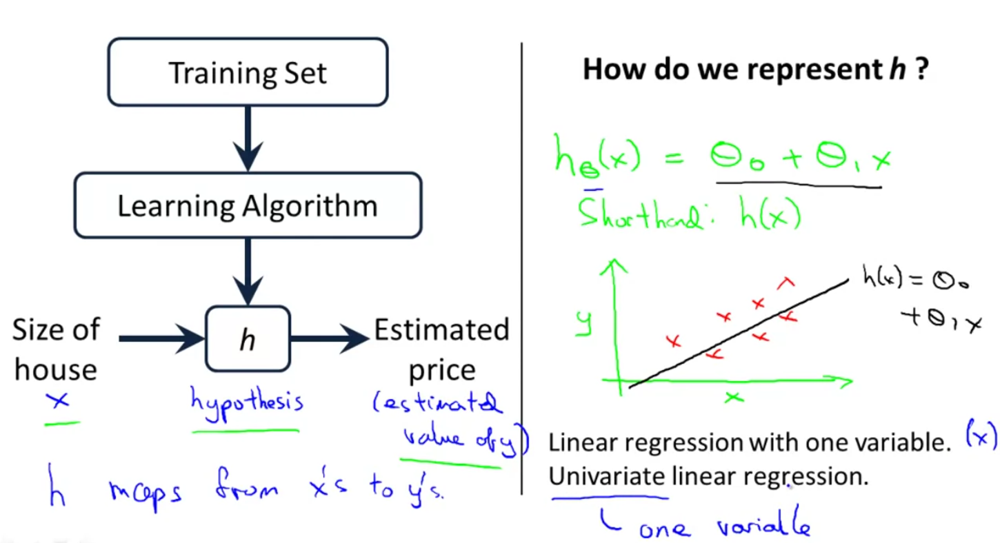
Figure: Theory of Linear Regression
9.1.1.2 Cost Function
Continuing from the linear regression section, the cost function is a tool we use to get the best possible straight line (\( h_{\theta} (x) = \theta_0 + \theta_1 x \)) through the data. We want to choose values for \( \theta_0 \) and \( \theta_1 \) so that \( h_{\theta} (x) \) is close to \( y \) for all \( m \) examples. Formally we want to minimize;
for every training example. What we are doing here is minimizing the cost function \( J(\theta_0, \theta_1) \) (\( \equiv \frac{1}{2m} \sum_{i=1}^{m} ( \hat{y}^{(i)} - y^{(i)} )^2 = \frac{1}{2m} \sum_{i=1}^{m} ( h_{\theta} (x^{(i)}) - y^{(i)} )^2 \)) to get the best line.
For the full linear regression we have;
Hypothesis: \( h_{\theta} (x) = \theta_0 + \theta_1 x \)
Parameters: \( \theta_0, \theta_1 \)
Cost Function: \( J(\theta_0, \theta_1) \equiv \frac{1}{2m} \sum_{i=1}^{m} ( \hat{y}^{(i)} - y^{(i)} )^2 \)
Goal: \( \min_{\theta_0, \theta_1} J(\theta_0, \theta_1) \)
For the simplified form (\( \theta_0 = 0 \)) of linear regression we have;
Hypothesis: \( h_{\theta} (x) = \theta_1 x \)
Parameter: \( \theta_1 \)
Cost Function: \( J(\theta_1) \equiv \frac{1}{2m} \sum_{i=1}^{m} ( \hat{y}^{(i)} - y^{(i)} )^2 \)
Goal: \( \min_{\theta_1} J(\theta_1) \)
where the hypothesis function must go through the origin. Note the hypothesis function (\( h_{\theta} (x) = \theta_1 x \)) is a function of \( x \), whereas the cost function (\( J(\theta_1) \)) is a function of \( \theta_1 \). Lets examine the cost function is different circumstances, perfect line, and imperfect line;
In the perfect line example we have \( \theta_1 = 1 \).

Figure: Perfect Line
In the imperfect line example we have \( \theta_1 = 0.5 \) with \( J(\theta_1 = 0.5) = 0.58 \).

Figure: Imperfect Line
Cost function as a function of \( \theta_1 \) (minimized at \( \theta_1 = 1 \));

Figure: Cost Curve
The figure below represents a simple housing market example. This data can be plotted with matplotlib.
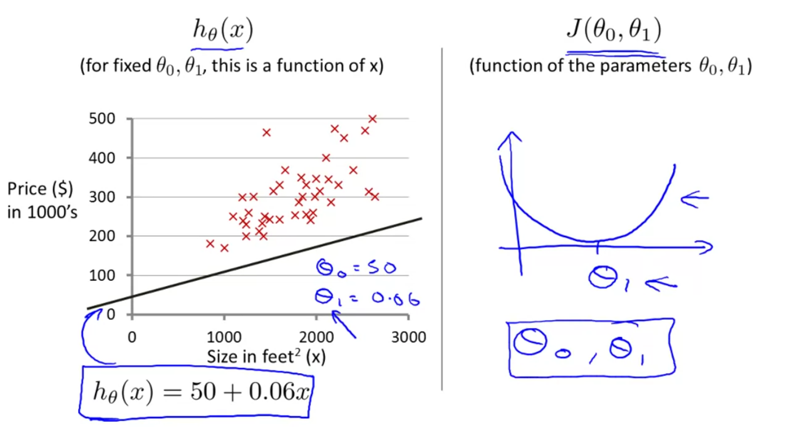
Figure: 1D Example
The figure below the general shape of the cost function for a system like this with 2 parameters. This can be done with matplotlib.

Figure: 2D Cost Curve
The figure below is a slightly different housing market example with the 2D parabola drawn as a contour plot. This can be done with matplotlib.
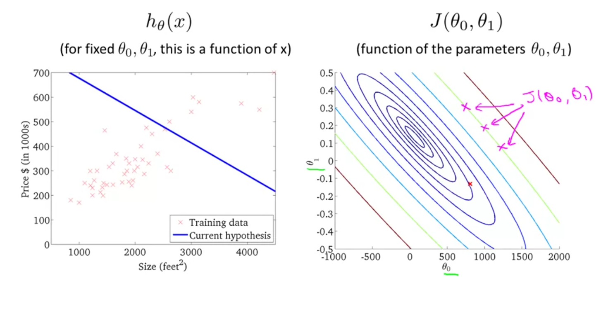
Figure: 2D Contour Plot Example
9.1.1.3 Gradient Descent
Goal: Want to minimize \( J( \theta_0, \theta_1 ) \).
Execution: Initialize \( J( \theta_0, \theta_1 ) \). Keep Changing \( \theta_0 \) and \( \theta_1 \) until \( J( \theta_0, \theta_1 ) \) is minimized.
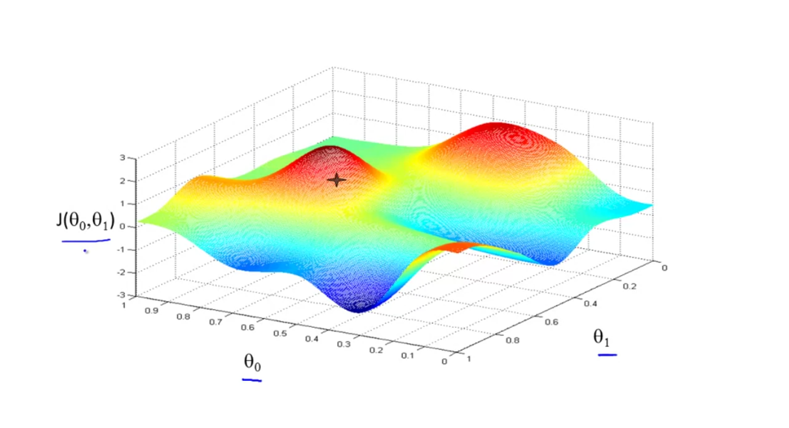
Figure: Gradient Descent Plot
For the figure above, \( \theta_0 \) and \( \theta_1 \) will change so that they are in the blue region and not the red region.
Gradient Descent Algorithm:

Figure: Correct Gradient Descent Algorithm
Remember to do simultaneous updating of the parameters that make up the cost function, instead of what is incorrectly displayed in the figure below:

Figure: Incorrect Gradient Descent Algorithm
The following figure graphically displays the intuition behind gradient descent by applying concepts from calculus;

Figure: Gradient Descent Intuition
The value of the learning rate \( \alpha \) determines how much the parameter \( \theta_j \) changes with each gradient descent step. If \( \alpha \) is too small, the gradient descent algorithm will approach the minimum slower than it could have if \( \alpha \) was larger. If \( \alpha \) is too small, the gradient descent algorithm will overshoot the minimum and likely end up giving a larger \( J ( \theta_0 , \theta_1 ) \) that what could be achieved with lower \( \alpha \). Gradient descent will converge so some local minimum no matter what even if the learning rate is very small, as seen in the figure below;
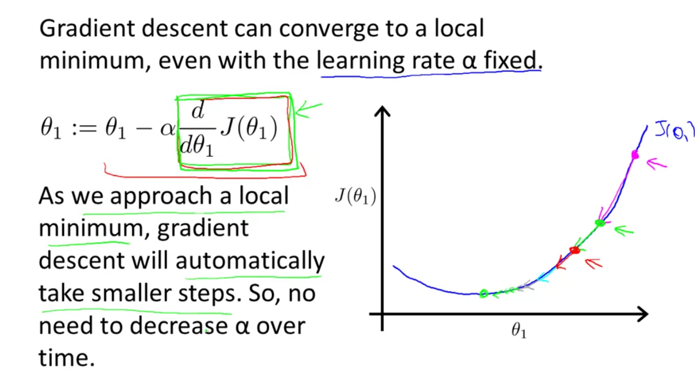
Figure: Learning Rate Intuition
We will now go through gradient descent for linear regression.
Recap:
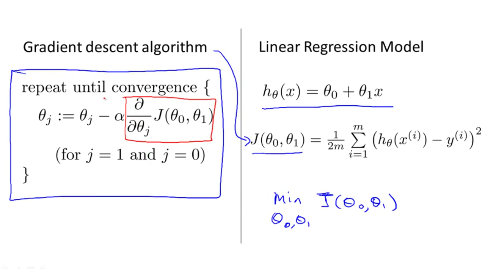
Figure: Recap of Concepts
From the figure above, we will be looking at the derivative term in the figure below;

Figure: Calculation of Cost Function
We put it all together with the following gradient descent algorithm, shown in the figure below;

Figure: Gradient Descent Algorithm in Full
The figure above shows the full extend of this simple gradient descent algorithm.
Another type of gradient descent algorithm is called batch gradient descent, which uses all the training examples before updating parameters.
9.1.2 Multivariate Linear Regression
It is instructive to move from 1 to N variables to process in our understanding of machine learning concepts. Its not much of a leap, but will involve generalizing for N variables which takes some getting used to.
9.1.2.1 Multiple Features
The following is an example of an application of multivariate linear regression, used to try to predict the housing price \( y \) based on an input vector \( \vec{x} = \) [size, number of bedrooms, number of floors, age of home];
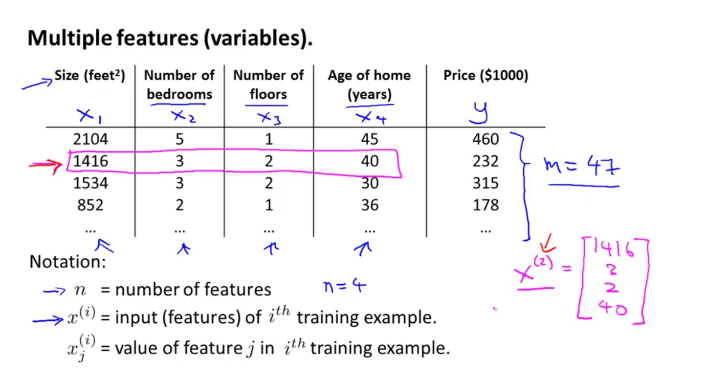
Figure: Introduction to Multiple Features
For a general multivariate system, the mathematical expression is given as follows;
For the previous example, the hypothesis function would look like the figure below;
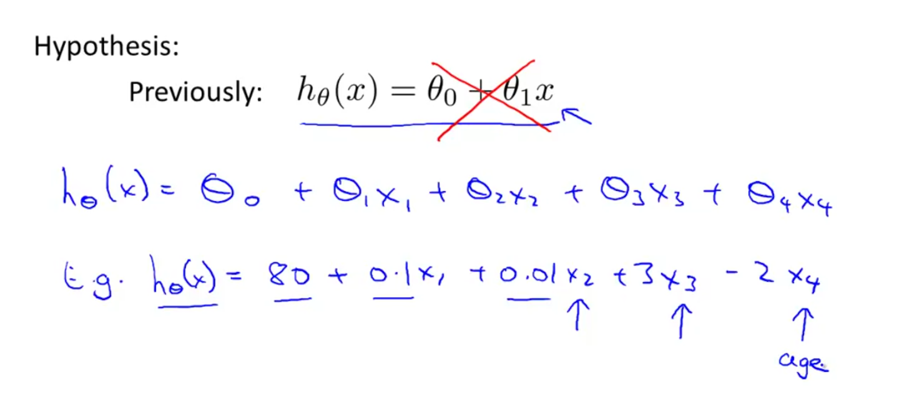
Figure: Multivariate Regression (N = 4) Mathematical Expression
The hypothesis function can be expressed more concisely using dot products and vector notation, extending the sum \( h_\theta (x) = \theta_0 \sum_{n=1}^{N} \theta_i x_i \) to include the 0th term asserting that \( x_0 = 1 \);
The figure below clears up any confusion translating from mathematical expressions of vectors/tensors to a visual expression.
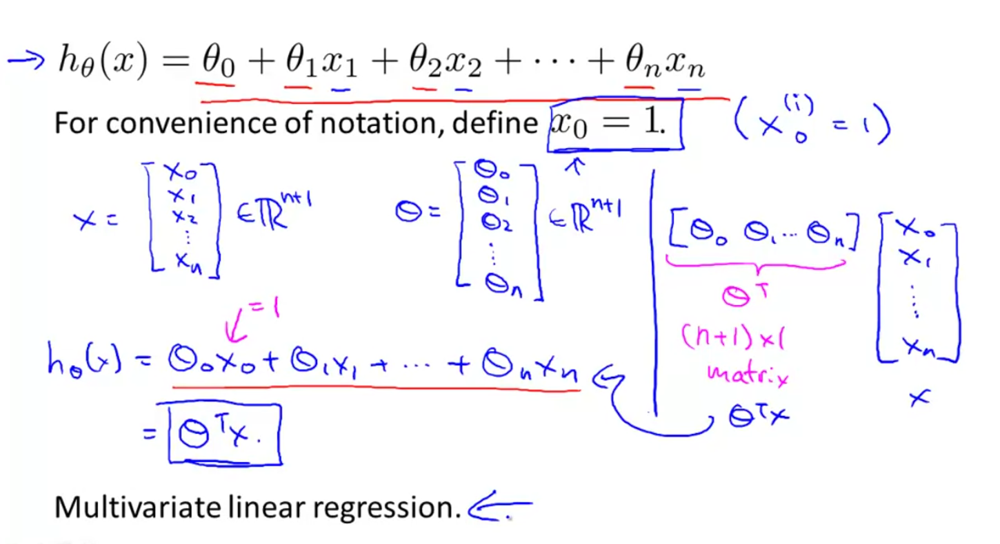
Figure: Mathematical Notation
Now the parameters are defined by a N+1 dimensional vector \( \vec{\theta} \). The cost function can be expressed in vector notation as well;
The same can be said for gradient descent which is shown in the following figure;

Figure: More Mathematical Notation
The following figure shows how the gradient descent algorithm changes between linear and multivariate regression.

Figure: Gradient Descent Algorithm in Full
A new concept called feature scaling can be used to speed up computation and avoid memory error. The following figure carries over the principles from the housing price concept, showing how to scale the variables effectively.
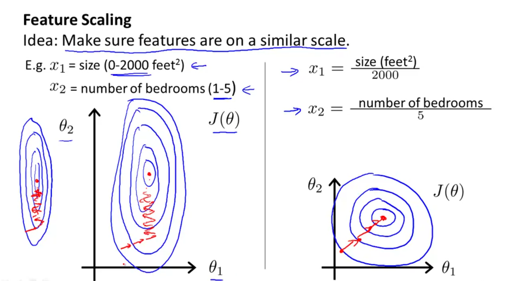
Figure: Gradient Descent Algorithm in Full
We see that for all training examples the values range between 0 and 1, which is valid given we are trying to normalize them to be within \( x \epsilon [-1, 1] \).
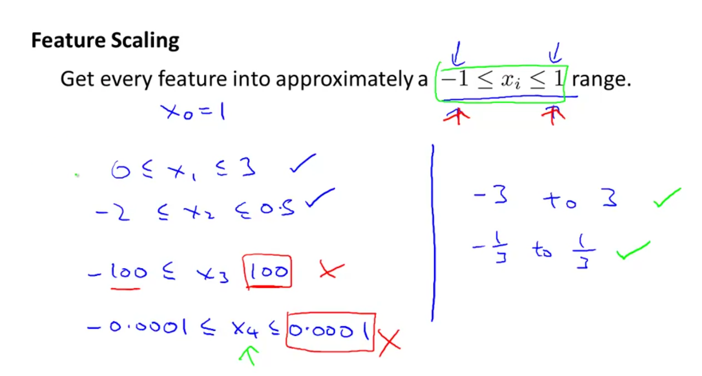
Figure: Gradient Descent Algorithm in Full
Additionally, one could use mean normalization to try to create a desirable range of \( x \epsilon [-\frac{1}{2}, \frac{1}{2}] \).
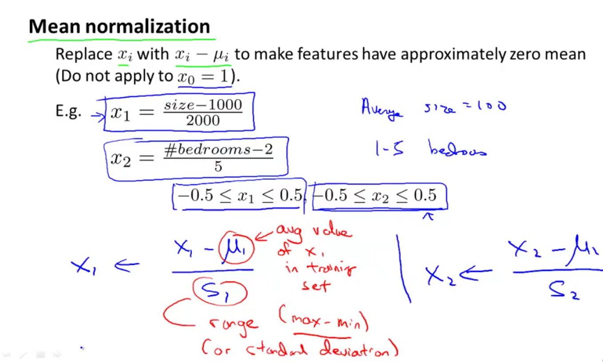
Figure: Gradient Descent Algorithm in Full
9.1.2.2 Gradient Descent Standard Procedures
We want to know when to stop the algorithm. An instructive way to do this is to declare convergence if the rate of change of the cost function \( | \frac{\partial J ( \theta )}{\partial{t}} | \) drops below a certain value (lets say \( \epsilon \)), which means the algorithm is halted and the system is done being trained.

Figure: Gradient Descent Algorithm in Full
Sometimes the value will oscillate around a local minimum like a satellite orbiting the planet in an elliptical fashion. This is because the learning rate is too large. If the learning rate was smaller the system would converge slower, but possibly reach a lower minimum.
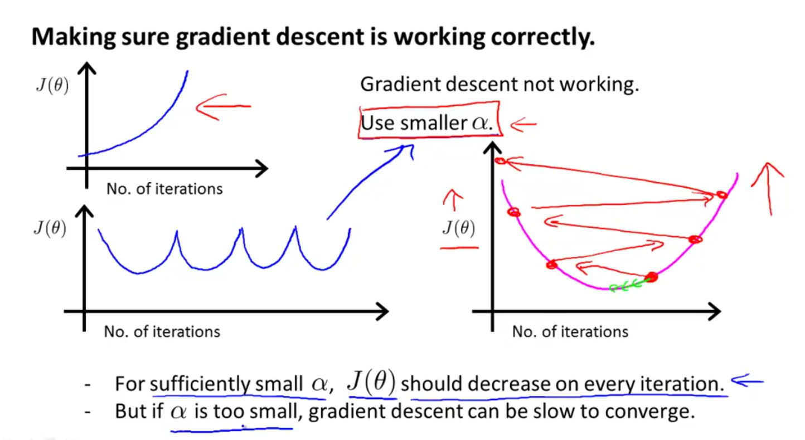
Figure: Gradient Descent Algorithm in Full
The best method is to try a bunch of different learning rates scaling exponentially \( C_0 r^n \), and see which one gives the lowest value for the cost function in the test set and training set. Its optimal to search for a system that has low bias and low variance.

Figure: Gradient Descent Algorithm in Full
The next instructive thing to do is to move to polynomial regression, followed by multivariate polynomial regression. The basic function for polynomial regression is \( h_{\theta} ( x ) = \sum_{i=0}^{N} \theta_i x^i \) (note \( x^0 = 1 \). There do exist other forms of polynomial regression using non-integer powers such as what is seen in the figure below.

Figure: Gradient Descent Algorithm in Full
There do exist other forms of polynomial regression using non-integer powers such as what is seen in the figure below.

Figure: Gradient Descent Algorithm in Full
The figure below shows the procedure for gradient descent, determined analytically using the principles for multivariate calculus. Numerically, this meant we would have reached a local minimum (or possibly, but not probably, the global minimum) if the rate of change of the cost function with respect each variable is zero, then there are no changes to any values of \( \theta_i \) that bring you closer to the local minimum (i.e. \( \frac{\partial{J (\theta)}}{\partial{\theta_i}} = \vec{0} \).
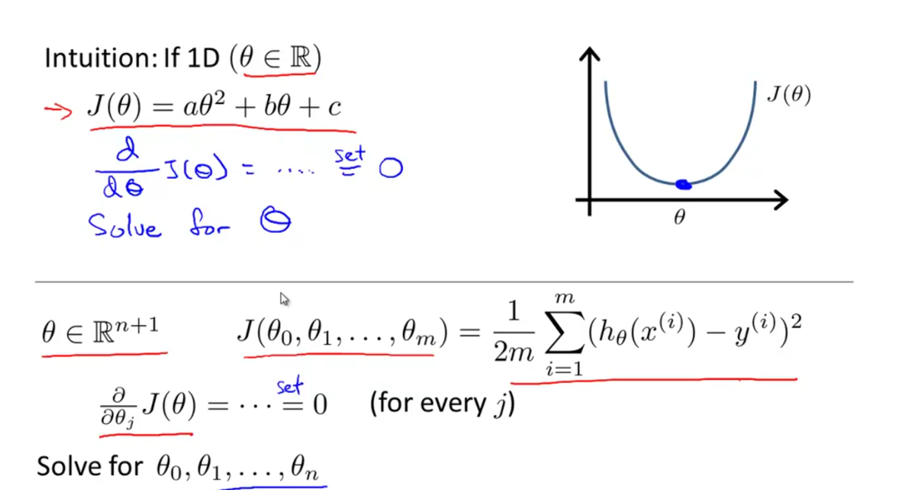
Figure: Gradient Descent Algorithm in Full
With a bit of linear algebra it can be shown that the optimal value for \( \vec{\theta} \) is given by;
If an array containing rows of training examples containing parameters such as [ size ( \( ft^2\) ), \( N_{rooms} \), \( N_{floors}, t_{age} \) ] and the labels for the training vectors \( \vec{y} \). The figure below shows how rows of training examples and their respective labels can be turned into tensor formats.

Figure: Gradient Descent Algorithm in Full
The design matrix is an \( (n, m) \) tensor, where \( n \) is the total number of features and \( m \) is the total number of training examples.

Figure: Defining Tensors
The figure below outlines the key differences between gradient descent and the analytical solution derived in the above figure.

Figure: Comparing Numerical and Analytical Methods
9.2 Artificial Intelligence
9.2.1 Computer Vision
9.2.2 Natural Language Processing
NLP focuses on optimizing a machine learning algorithm so it can spit out an optimal output given some natural language data (typically sound or text; .wav or .txt). NLP is a sub field of computer science, information engineering, and artificial intelligence. Major challenges of NLP include speech recognition, natural language understanding and natural language generation (using GAN’s).
Here is a comprehensive list of NLP functions;
Speech
Speech Recognition: the exact opposite of text-to-speech; a process that most accurately converts a sound clip of a person speaking into the corresponding speech representation. One issue that arises is sounds representing successive letters blending in through a process called coarticulation.
Speech Segmentation: is typically used alongside speech recognition software to ensure words in the text a properly segmented. This is necessary because human speech can tend to slur words (i.e not many successive pauses between words) which makes it difficult to properly segment words without speech or word segmentation.
Text-to-speech: a process that transforms units of text into a spoken representation.
Syntax
Grammar Induction: generate a formal grammar that describes language syntax.
Lemmatization: the task of removing inflectional endings only and to return the base dictionary form of a word which is also known as a lemma.
Morphological Segmentation: separate words into morphemes and identify the class of morpheme. Morphemes are the meanings of prefixes and suffixes.
Part-so-speech tagging: determine the parts of speech (categories of words with similar grammatical properties) for each word.
Parsing: determine the parse tree (grammatical analysis) of a given sentence by using either dependency parsing or constituency parsing. The grammar for natural languages is ambiguous and there can be multiple possible interpretations for a correct parse.
Sentence Boundary Disambiguation: find the sentence boundaries (which are marked by periods or other punctuation marks) given a chunk of text.
Stemming: the process of reducing inflected words to their stem word.
Word Segmentation: a process that correctly separates a chunk of continuous text into separate words, which is more useful for languages like Mandarin, Japanese and Thai which aren’t necessarily spaced out like English words.
Terminology Extraction: a subtask of information extraction which makes use of linguistics processors (parse chuncking and part-of-speech tagging) to determine the appropriate terminology candidates to extract from a corpus (i.e. syntactically plausible terminological noun phrases).
Semantics:
Lexical Semantics: a subfield of linguistic semantics that looks at how the meaning of lexical units (prefixes, affixes, suffixes, words, etc.) correlates with the structure of the language or syntax (referred to a syntax-semantic interface), as well as; classification and decomposition of lexical items, the differences and similarities in lexical semantic structure cross-linguistically, and the relationship of lexical meaning to sentence meaning and syntax.
Distributional Semantics: Often summarized as; linguistic items with similar distributions have similar meanings; a research area that develops and studies theories and methods for quantifying and categorizing semantic similarities between linguistic items based on their distributional properties in large samples of language data.
Machine Translation: translate text from one language to another; considered one of the most difficult tasks (classed as AI complete), requiring many types of knowledge to perform optimally including; grammar, semantics, and even facts about the real world.
Named Entity Recognition: given a stream of text, determine which items in the text map to proper names, and also label what type of proper noun it is. Capitalization can help with recognizing proper nouns in a stream of text but does nothing to help with labelling proper nounds.
Natural Language Generation: often viewed as the opposite of Natural Language Understanding; it converts information from computer databases or semantic intents into readable human language. NLG can be used to produce long form content for organizations to automate custom reports, produce custom content for a web or mobile application, and even work as a chat-bot with the option of using speech-to-text to have the user interact via microphone.
Natural Language Understanding:
9.2.2.1 Language Detection
9.2.2.2 Lexical Analysis (Tokenization)
9.2.2.3 Sentence Boundary Disambiguation (Sentence Segmentation)
9.2.2.4 Part-of-Speech Tagging
9.2.2.5 Named Entity Extraction
9.2.2.6 Shallow Parsing (chunking)
9.2.2.7 Parsing
9.2.2.8 Coreference Resolution
9.2.3 AI Business Reports
9.2.3.1 WE_AI_Report_2018
European study of AI in business. Basically asked the best person available from 270ish european companies with the role and skill-set closest to the CTO or CIO a bunch of questions to gauge the state of artificial intelligence in various [scale] business.
Over the years artificial intelligence has helped with; processing voice to text or language translation, real-time traffic navigation, dynamically serving targeted advertisements based on personal data and browsing history, predicting trends and guiding investment decisions in financial institutions.
The current developments have been fueled by an exponential rise in computing power, increasing accessibility and sophistication of powerful algorithms, and an explosion in the volume and detail of data available to feed AI’s capabilities.
74% of C-level employees expect AI to be helpful with; engaging customers by enhancing the user experience, tailoring content, increasing response speed, adding sentiment, creating experiences, and anticipating need. C-suite respondents scored ‘engaging customers’ highest of the AI benefit areas.
Someone from Novo Nordisk Pharmaceuticals said that, "when working with AI initiatives, it is important to focus on key business issues that benefit the whole and not just doing sub-optimization at small scale", and someone from PFA Pension and Insurance said, "I don ́t see why speaking openly about our ongoing AI initiatives should be a big fuss. What really makes a difference from a competitive perspective is a companies ability to execute".
10 Nanotechnology
10.1 Nanoelectronics
10.1.1 Molecular Scale Electronics
Initially, integrated circuits have been fabricated using bulk electrical materials, with microchip and microprocessor complexity increasing with respect to the miniaturization of electrical components (such as transistors). As electrical components are miniaturized, their sensitivity to deviations increase, with 13 nm channel-length devices requiring accuracy up to a few atoms (+/- 0.3 nm, or 2.3% deviation in unit length) to function properly. The increasing market demand for the miniaturization of transistors has now lead top-down methods (etching, deposition, lithography) of producing devices to become increasingly research intensive and costly, so lately more research funding has recently gone into studying bottom-up approaches like creating molecular scale electronics for common circuit elements and devices.
Contrasting the top-down (etching, deposition, lithography) and bottom-up approaches (chemistry lab) is instructive. Top-down methods require selective adding and removal of material to a flat substrate conducted via various sets of etching, deposition, and lithography steps that become more difficult to perform as smaller scales while also requiring increasing precision. Bottom-up methods require chemical/organic synthesis steps to modify large batches of molecules at a time, followed by selective extraction of the yield (correctly formed molecules) and proper discarding of the incompletely reacted molecules. Bottom-up devices can act as wires, rectifiers and transistors.
Additionally, single molecules electronics is an emerging field but far from being commercially realized. However, with top-down methods reaching their commercial (and maybe even physical) limits for transistor fabrication, and the never-ending demand for more computation power, molecular scale electronics seem to be an inevitability for the 2020’s.
10.1.1.1 Examples of Circuit Elements/Devices
Carbon nanotubes are what first comes to mind when thinking of nano-wire. The main issue with nano-wire is forming electrical contact with the electrode.
Single Molecules Transistors function differently than their bulk counterparts. For one the gate isn’t the same at all. There’s less of a trans-conductance \( g_{IV} = \frac{\partial{I}}{\partial{V}} \) determining the current output, and its more of a 0 or 1 type output with electrons either being highly encouraged or discouraged to hope molecules based on a change in the difference in the energies of molecular orbitals. This quantization of electrons leads to a significantly different behaviour from bulk scale transistors. One electron transported between molecules can provide the means to turn a transistor on or off. Poly(p-phenylene vinylene)’s and fullerines are typically used for the conducting channel and works via the coulomb blockade mechanism when appropriately placed between the source and the drain. Further research is being done to the low temperature operation of these types of electronics to see if more advanced functions (like spintronics) can be performed using these kinds of devices.
Rectifiers involve the one-way conduction of electrons via donor acceptor molecules interactions.
10.1.1.2 Methods to form Electrical Contact
One of the biggest issues with molecular scale electronics is making reliable/reproducible electrical contact with the molecular circuit elements.
One solution is to make molecular gaps by stretching a thin electrode until it breaks. This can also be done by electromitigation. Conducting measurements on thee devices can be done using and STM (scanning tunneling microscope).
Another strategy is to anchor molecules to exploiting sulfurs high affinity to gold, where sulfur on the molecules serves as a sort of crocodile clip to attach to gold electrodes. This solution, however, is non-specific, so the sulfurs bond to any gold surfaces available. Additionally, contact resistance is highly dependant on the atomic geometry around the anchoring site (so it compromises the reproducibility of the device). To combat this issue fullurenes can be used instead because the pi-stacking system can lead to more reproducible bonding geometry around the anchoring site.
11 Engineering
12 Business
13 Economics
13.1 Industries
13.1.1 Primary Sector (Agriculture)
Exploit natural resources and produce raw materials.
Ex) Mining, farming.
13.1.2 Secondary Sector (Manufacturing and Construction)
Process raw materials and manufacture final goods.
Ex) Production of cars, food and clothes.
13.1.2.1 Quantitative Breakdown of US Manufacturing Industry
I wanted to discover how much impact each sector has on the US manufacturing industry.
| Sector | $ In Trillions | In % of total US GDP |
|---|---|---|
| Construction | 1.2 T | 4 % |
| Automotive | 0.7 T | 3.5 % |
| Food | 0.7 T | 3.5 % |
| Chemical | 0.5 T | 2.5 % |
| Electrical | 0.4 T | 2 % |
| Metallurgical | 0.125 T | 0.625 % |
| Textile and Clothing | 0.08 T | 0.4 % |
| Glass | 0.03 T | 0.15 % |
| Total: | 3.35 T | 16.675 % |
13.1.3 Tertiary Sector (Service)
Distribute goods and provide services.
Ex) Supermarkets, hairdressing, and travel agents.
13.1.3.1 Quantitative Breakdown of US Service Industry
I wanted to discover how much impact each sector has on the US service industry.
| Sector | $ In Trillions | In % of total US GDP |
|---|---|---|
| Wellness | 4.2 T | 21 % |
| Health care | 3.5 T | 17.5 % |
| Information Technology | 2.5 T | 12.5 % |
| Professional Services | 2 T | 10 % |
| Travel | 1.6 T | 7.5 % |
| Education | 1.35 T | 6.8 % |
| Retail | 1.14 T | 5.7 % |
| Insurance (Health and Life) | 0.84 T | 4.2 % |
| Media and Entertainment Industry | 0.7 T | 3.5 % |
| Energy | 0.4 T | 2 % |
| Arts and Culture | 0.4 T | 2 % |
| Finance/Banking | 0.25 T | 1.25 % |
| Hospitality | 0.2 T | 1 % |
| E-Commerce | 0.137 T | 0.69 % |
| Marketing | 0.1 T | 0.5 % |
| Sports | 0.07 T | 0.35 % |
| Design (Graphic of Product) | 0.06 T | 0.3 % |
| Consulting and Staffing | 0.04 T | 0.2 % |
| Total: | 19.34 T | 96.75 % |
Lol wrong, but kinda close. Its representative of the ratio’s of yearly revenue between service industries. I will try to recalculate this later.
14 History
15 Sociology
16 Theology
16.1 Seven Deadly Sins/Heavenly Virtues
I made an album about this stuff. Its short term gratification, expedience. Its what you choose to have now, to forgo progress down the road.
16.1.1 Pride/Humility
16.1.2 Gluttony/Temperance
16.1.3 Lust/Chastity
16.1.4 Sloth/Diligence
16.1.5 Greed/Charity
16.1.6 Envy/Kindness
16.1.7 Wrath/Patience
17 Job Related Endeavors
17.1 Data Scientist/Analyst Type Positions
17.1.1 Business Analyst/Developer
Marsh Canada Ltd - Divisional Office; the world’s largest insurance broker, a major subsidiary of Marsh & McLennan Companies (www.mmc.com). Marsh & McLennan Companies is a professional services firm with risk and insurance services, investment management, and consulting businesses.
Be part of the Operations and Technology group assisting Business in delivering automated solutions to improve business processes. The work environment is fast paced, team oriented, and offers a wide latitude based on your individual initiative.
Responsible for;
Understanding Business Needs
Gathering Business Requirements
Making BRD’s
(Business Requirements Documents)Develop current and future state process diagrams
Developing prototypes to facilitate/validate business requirements
Documenting use-cases required to support business requirements for application development
Developing requirements traceability matrix as input for UAT
This role will likely have supporting projects involving cross-offices, business practices, or functions, as well as building Microsoft applications using VBA in Excel and/or Access, application deployment, application support and debugging.
Addition responsibilities include;
Manage engagements with internal stakeholders
Liaise with business stakeholders
Liaise with the IT project team
Liaise with offshore development team
Responsible for the completeness and accuracy of the business requirements
Responsible for delivering at milestone dates set by the project manager
Should probably study the SDLC (software development life cycle).
Desirable Skills;
Advanced programming in VBA, SQL, Python
Advanced knowledge of relational databases, experience in building database applications
Knowledge of SharePoint
Strong Business Process Analysis and documentation skills
Fluency in written and spoken English, French
Ability to elicit and document business requirements
Can effectively participate/lead requirements gathering and review sessions comprised of both IT and business representatives
Ability to articulate Business Requirements to both on shore and off shore development teams
Ability to articulate technical concepts, and design to business users
Experience of the complete SDLC
Ability to partner with IT and the business teams to management scope of the requirements
Strong track record in collaborating across the organization
Strong (clear and concise) communication skills
Good interpersonal skills
Excellent oral and written skills
Demonstrable ability to work under pressure to support demanding deadlines
Demonstrable ability to work as a self-starter requiring limited supervision
Key Takeaways;
The most important things to look into are; how to determine/gather business requirements, the SDLC, making business requirement documents, knowing how to build database applications, using use-cases.
Important skills I already have are; advanced experience with Python, a little bit of experience with SQL, fluency in English and French, sufficient interpersonal and linguistics skills to elicit and communicate important information regarding business requirements to business stakeholders, IT project ream, and offshore development team. In a lot of ways I’m a self starter and an independent worker. Demonstrated ability to grow quickly.
17.1.1.1 Software Skills Needed
Software Development Life Cycle (SDLC)
" Software Development Life Cycle (SDLC) is a process used by the software industry to design, develop and test high quality softwares. The SDLC aims to produce a high-quality software that meets or exceeds customer expectations, reaches completion within times and cost estimates. " This is basically the process by which software development teams create high quality software, starting from the customer requirements and ending with a maximally efficient software with minimal bugs (ideally zero).
SDLC is a process followed for a software project, within a software organization. It consists of a detailed plan describing how to develop, maintain, replace and alter or enhance specific software. The life cycle defines a methodology for improving the quality of software and the overall development process.

Figure: Software Development Life Cycle
Step 1) Planning and Requirement Analysis
Planning for the quality assurance requirements and identification of the risks associated with the project is also done in the planning stage. The outcome of the technical feasibility study is to define the various technical approaches that can be followed to implement the project successfully with minimum risks.
Step 2) Defining Requirements
Following the analysis stage, we will clearly define and document product requirements using a Software Requirement Specification (SRS).
Step 3) Designing the Product Architecture
SRS is the reference for product architects to come out with the best architecture for the product to be developed. Based on the requirements specified in SRS, usually more than one design approach for the product architecture is proposed and documented in a Design Document Specification (DDS), which is to be reviewed by stakeholders who will assess; risk, product robustness, design modularity, budget and time constraints, and the best design approach. The internal design of all the modules of the proposed architecture should be clearly defined with the minutest of the details in DDS.
Step 4) Building or Developing the Product
Actual fun time where we develop the software needed to satisfy the business requirements, mostly guided by the Design Document Specification (DDS). The better the DDS, the easier this stage of the process will be. Developers must follow the coding guidelines defined by their organization and programming tools like compilers, interpreters, debuggers, etc. are used to generate the code.
Step 5) Testing the Product
This stage is usually a subset of all the stages as in the modern SDLC models, the testing activities are mostly involved in all the stages of SDLC. However, this stage refers to the testing only stage of the product where product defects are reported, tracked, fixed and retested, until the product reaches the quality standards defined in the SRS.
Step 6) Deployment in the Market and Maintenance
Once the product is tested and ready to be deployed it is released formally in the appropriate market. Sometimes product deployment happens in stages as per the business strategy of that organization. Then based on the feedback, the product may be released as it is or with suggested enhancements in the targeting market segment. After the product is released in the market, its maintenance is done for the existing customer base.
17.1.1.2 Business Knowledge Needed
Develop Current and Future State Process Diagrams
Current State is the terminology used to describe a series of work flows developed to depict business processes as they currently function. A diagram is created to reflect all the steps of the process, who is responsible for each step, and the time it takes to complete each task for the business processes that are currently ongoing. Here’s an example;

Figure: Daily Routine Process Flow Chart Example
The current state process diagram, described above, establishes a baseline that is used to determine changes that will improve effectiveness and productivity for the business. Also refereed to as a value stream map, or a swim lane diagram depending on preference.
The current state diagram shows us where we are right now in development;
See how a process works (what theoretically happens next)
Identify the required stakeholder approvals before proceeding
Determine if there is anything missing in the tasks identified
Whilst creating the current state diagram you must; consider the straight through process, consider processes that are executed in parallel, document steps throughout the process, establish clear boundaries between the start of the process and the end of the process, identify all steps (including decision points) executed within the current process (; understand that there may be variations), critically evaluate the process flow chart (;undercover opportunities to improve the process and better satisfy your customers),
Additionally, document bright ideas - these are ideas captured during the current state mapping process as ideas for future improvements; ensure these ’bright ideas’ have either been addressed, incorporated or discarded as no longer needed when considering future state design. If exceptions are a main source of concern, note them within the process map for future consideration.
After creating the current state map and evaluating the data sheets, the logical next step is to create a future state diagram depicting how the process will work after improvements to the process are implemented, which focuses on;
Improved Process for the Customer
Eliminated Waste (removable inefficiencies)
Motivated/Energetic/Productive Workers
Reduced Cycle Time
The overall goal is to define what we would like to improve and a plan to achieve it, a share vision if you will, to serve customers, motivate employees, and reduces ’non-value-add’ tasks.
To optimize the business process, consider;
Can tasks be eliminated?
Can tasks be combined with others
Can tasks be performed in parallel with other tasks
Do certain tasks take too long, why?
Is a task subject to rework cycles, why?
Should tasks be performed by someone else? Whom? Is value added?
Determine improvement opportunities using data analysis
Identify obstacles or challenges in the transition from the current state to the future state
Eliminate or reduce weaknesses in the process (handoffs, redundancies, non-value-add steps)
How would the process look in a world with no constraints?
Consider customers perspective
To implement;
Complete Milestone Tasks to Transition
Establish Delivery Timeframes
Assign Ownership to Accomplish Tasks
Develop Communication Plan
Source [n]; https://www.unh.edu/lean/phase-6-implementation-plan-sell-sponsor
Business Requirement Analysis
"Process analysis is the action of conducting a review and gaining an understanding of business processes. It involves reviewing the components of a process, including inputs, outputs, procedures, controls, actors, applications, data, technologies and their interactions to produce results. The analysis includes the evaluation of time, cost, capacity and quality of processes, being able to use static or dynamic visual models of the process, data collection from the beginning to the end of activities, analysis of value chain, end-to-end modeling and functional decomposition [n]".
Step 1) Identify the Process
The first step is to identify which processes need improvement. These are the ones you need to study and understand. It’s important to always think about the goals of your business, and what processes contribute to that goal. Prioritize them... but how do you identify which are the most important processes? They are those that most contribute to achieving the organizational goals and add more value to the final delivery of the processes.
Step 2) Establish Team
Establish a team to help you with the business process analysis. The best people are those who already work with the process on a daily basis. They know the steps, the information, the goals and, most importantly, the flaws and bottlenecks of the process. Ways to make the team interact in a productive and business appropriate manor include; conducting interviews with team members, performing group brainstorming sessions, conducting business meetings to collect knowledge and insights from the team. When assembling your team, it’s very important to consider which professionals will effectively help you analyze business processes (THATS MEEEEE). In addition to considering a person based on their understanding of Business Process Management, Marsh Canada Ltd - Divisional Office will consider based on; leaders who are related to the chosen processes, employees who are motivated by the possibility of improvement, a supporter of the process, preferably from top management, to empower the team.
Step 3) Create a Business Process Diagram / Flowchart
This is coming full circle... good.
This process analysis technique is very useful, and can give you a real insight into how the process happens. With standard symbols and tools, you can represent the process in a clear and practical way. By doing this, it becomes much easier to see what’s right and what’s not working, and what are the bottlenecks and improvement points. Building a process diagram is one of the fundamental steps of the business analysis methodology, check out a step-by-step plan on how to do one (second take):
Define those who are responsible: process diagrams define responsibilities by means of lanes, which are areas of the diagram in which the tasks of a team or position will be represented.
Include a process initiator event: every process starts with some event, it can be an email sent by a client upon the arrival of a previous process part, for example.
Define tasks and their relationships: in each lane you should indicate the tasks that need to be done, such as finding the part or answering the email request. Also indicate, through linking elements, which task is next and who is responsible.
Signal the end of the process: in the same way that one event marks the beginning of the process, another marks its end. Examples) “request fulfilled” , “part delivered”.
Step 4) Define the AS IS process
With all the above information, define how the process happens now. It’s very important not to get ahead, and stick with the actual situation, no matter how it is. Be real. That is: understand how the process is taking place at this time, not how you would like it to be in the future. To do this, in this stage of business process analysis, you have to follow 3 main steps:
Interviews with the actors: is intended to represent the activities of the process, its sequence, who is responsible, whether there is a need for permissions in other instances of the process and if some new information is generated.
Analyze the process model: find out what the purpose of the process is, what performance metrics are used, whether there are customer interactions, whether there are handoffs (passing work or information from one person, team or system to another), what business rules are applied, if there are bottlenecks, how the process is controlled, and other points.
Documentation: at this point, everything that has been analyzed must be properly reported in appropriate documents so that the consultation and presentation can be made clearly, following the defined notations.
Step 5) Specify improvement points
You may already know, but it’s important to determine what are the necessary and possible improvements. Keep in mind the strategic goals of the company in doing so, since all processes and actions must have them as objectives. Usually the points of improvement focus on the following aspects:
Interaction with customers: these moments must always be perfect, especially with external clients
Activities that add high perceived value: these must always occur in the best way, in order to deliver the highest possible perceived value to the final customer.
Hand offs: every time there’s an exchange of information or tasks between person and/or system there’s a risk of errors occurring. The more hand offs there are, the more risk there is.
Business Rules: these are standard procedures that facilitate the flow of the process and prevent the loss of time in decision making, because they are clear and objective rules to define how the process should run.
Bottlenecks: find out why the process stops flowing at certain points and set ways of how to avoid it.
Step 6) Model the process TO BE
Gather all the information and model the new process the way you want it to be and align it with the company and its goals and objectives. In fact, this step consists of designing the new improved process, one that will achieve the goals of the organization more efficiently and effectively. In the same way that we created a process diagram in the AS IS step, the TO BE step will also have one as well as all the necessary documentation to transmit this information and knowledge when necessary.
Sounds a lot like an expanded version of the current and future state diagrams source
As we can see, business process analysis generates the information needed to assess and address the roots of problems, and make informed decisions. With this method, you can understand how the work happens inside the organization and how well the business achieves its goals. It’s important to remember that this is a continuous operation, since there’s always a process to optimize or improve. Also, it’s possible that a process may become inconsistent with business goals, as it may change over time. All process analysis techniques are important and you shouldn’t skip any. Good software makes the difference when it comes to analyzing activities, and HEFLO BPM is the right one! So, with a dynamic and easy-to-use interface, it allows you to map, model, execute, improve, optimize and automate all the processes of your company, allowing continuous and effective improvement!
Source [n]; https://www.heflo.com/blog/process-mapping/business-process-ana lysis-methodology/
Making Business Requirement Documents
Many businesses have a process in place to assist with project management and implementation. One opportunity for improvement involves making reasonable estimates of how big a project is and how much it is going to cost. Business requirements are the critical activities of an enterprise that must be performed to meet the organizational objective(s) while remaining solution independent. A business requirements document (BRD) details the business solution for a project including the documentation of customer needs and expectations. If an initiative intends to modify existing (or introduce new) hardware/software, a new BRD should be created. The BRD process can be incorporated within a Six Sigma DMAIC (Define, Measure, Analyze, Improve, Control) culture.
Common objectives of the BRD are;
To gain agreement with stakeholders
To provide a foundation to communicate to a technology service provider what the solution needs to do to satisfy the customer’s and business’ needs
To provide input into the next phase for this project
To describe what not how the customer/business needs will be met by the solution
The BRD is important because it is the foundation for all subsequent project deliverables, describing what inputs and outputs are associated with each process function. The process function delivers CTQs (critical to quality). CTQs deliver the voice of customer (VOC). The BRD describes what the system would look like from a business perspective.
Who Commonly Helps Create the BRD
Project core team
Business partner(s)
Process owner(s) or representatives
Subject matter experts
Prerequisites for BRD
Project Charter; BRD helps us review this to ensure objective, goals, project, team and approvers are accurately reflected.
Current Environment Assessment; involves a detailed process map of the current environment highlighting areas that will be changed during the project. Refer to ’AS IS’ maps (current state diagrams).
Crutial to Quality (CQT);
Current measures: Data that defines and describes current performance – sigma level of the CTQ includes a definition of how the product/service’s characteristic is to be quantified.
Target/nominal value: What is the aim of the product/service? If there was never any variation in the product/service, this would be the constant value.
Specification limits: How much variation is the customer willing to tolerate in the delivery of the product or service? Define upper and lower specification limits as required by the customer needs.
Allowable defect rate: How often are the producers willing to produce a product/service outside the specification limits?
Target Environment Assessment; created in the measure phase, and includes a detailed process map of the target environment including level two functions. When distinguishing between level two or three functions, group the process functions into the following categories;
People: People are processing information and making decisions [core team designs high-level design/low-level design (HLD/LLD)]
Systems: Systems is processing information and making decisions
Package the BRD so it has a logical flow and is easy to follow. An example of a high-level list of sections follows;
Project overview including project charter information, scope, and objectives
Current environment assessment and systems overview (see additional details below)
Future process map
Process detail table
Overall project business rules and constraints
Impact assessment (fishbone for process functions)
Functional requirements (additional details below)
Data to be held (additional detail available below)
Schedule and budget
Terms and definitions
Approver information
Team information
Make sure you get the BRD is signed off. Business partners should be active participants in the development of the BRD, but a final review and sign-off is also essential.
Current Environment Assessment and Systems Overview
There are a number of items included in the BRD that require detailed documentation to ensure successful implementation. Following is a high-level overview of the types of detail to consider:
Who is the intended user?
How many users are there? Are they the same type of user or different?
What level of computer experience will the users have (or is needed)?
What is the required security?
Are there hardware constraints – networked or stand-alone?
What are the approximate numbers of records required initially plus the anticipated growth?
What technical support is necessary and available in-house?
What other systems need to integrate/communicate?
Backup. Describe the current back-up regime (e.g., tape back-up one/day). How will the new system fit with this? If this is not currently defined then think how much data could be inadvertently lost. For example would it be a major disaster if the last 30 minutes of work was lost, or could yesterday’s/last week’s data be retained?
Deliverables. What are the expectations – system, help files, documentation, full source code, training, support, etc.? Detail what is essential versus nice. Do not automatically ask for everything unless necessary. If the project manager is to maintain the system make sure he states that he requires the full source code – alternatively if the developer is to maintain the system consider settling for an escrow agreement (where the source is held by an independent third party). Be specific about tools necessary to help. If the developer is unwilling to provide the support necessary find someone else who will.
Summary of BRD
As with any tool, the BRD can have both benefits and failure modes. Benefits derived from a good BRD include reduced changes during the improve and control phases of DMAIC and reduced time to deployment. Failure modes from a poor BRD means the system developed will not meet business requirements. Creating a successful BRD requires planning and coordination. There are a few best practices that should be followed in this process. The team should hold a dedicated off-site session to complete the BRD with all required resources 100 percent available.
Source [n]; https://www.isixsigma.com/implementation/project-selection-trac king/business-requirements-document-high-level-review/
Use-Cases
Use Cases help us understand which developers are working on certain software module(s). They are also a popular technique for documenting and understanding system requirements. Use case diagrams graphically depict who will use the system and in what ways the user expects to interact with the system. Use cases are triggered when an actor initiates a use case to complete a business task. An actor is someone or something that fulfills the role of interacting with the system in a specific way. Only important use cases (based on project priorities) are documented.
Step 1) Identify Actors and Use Cases
Ex 1) “Aggregate Sales Forecasts”; which adds up all the sales forecasts received from field staff. This same goes for outputs.
Ex 2) “Generate Accuracy Report”; a report may be required at a certain time of the month on the accuracy of sales forecasts. Such an event (the generation of the report) is referred to as a temporal event since it is triggered by time.
Another way to identify use cases is by analyzing the context diagram of the system, which shows the external parties that interact with it to provide inputs and receive outputs. If an external party initiates an input into the system, it’s called an actor. It’s always important to double-check findings with business users after drawing up the use cases.
Step 2) Document High-level Use Cases
Document each use case to gain a better understanding of system functionality.
Ex Use Case Name: Approved Sales Predictions
Actor: Commercial Director
Description: The process of approving sales forecast values by the Sales Director.
Step 3) Document the Use Case Course of Events
Includes the inclusion of Case ID, Name, Document Creator, Document Updater, Actors, Description, Preconditions, Post conditions, Normal and Alternative Courses, Exceptions, Priority, Business Rules, Assumptions, etc.
Source [n]; https://businessanalystlearnings.com/blog/2013/9/30/the-3-step -guide-to-documenting-requirements-with-use-cases
17.1.1.3 References
[1]
[2]
[3]
[4] https://www.unh.edu/lean/phase-6-implementation-plan-sell-sponsor
[5] https://www.heflo.com/blog/process-mapping/business-process-analysis-methodology/
[6] https://www.isixsigma.com/implementation/project-selection-tracking/business-requirements-document-high-level-review/
[7] https://businessanalystlearnings.com/blog/2013/9/30/the-3-step-guide-to-documenting-requirements-with-use-cases